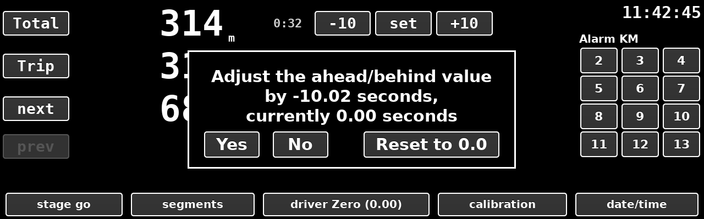
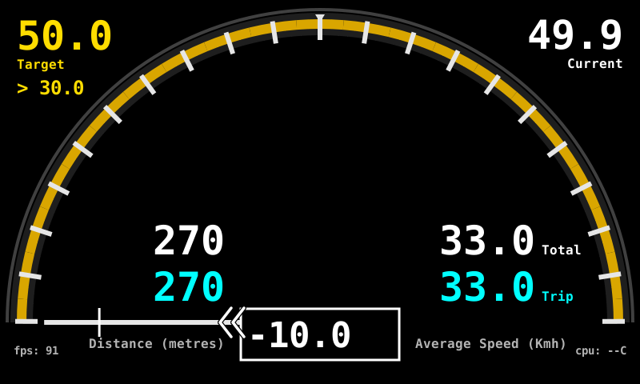

This option is used to rebase the driver's gauge to show zero error when the driver targets an error other than zero.
The popup window will show the ahead/behind value (the true error) and the current adjustment (how much is currently adjusted).
Yes sets the offset to zero.Reset to 0.0 removes the offset. The gauge shows the true error
again.No changes nothing.Only the driver's gauge changes. The distances, the schedule and the clock stay as they are, and starting a stage clears the offset.

